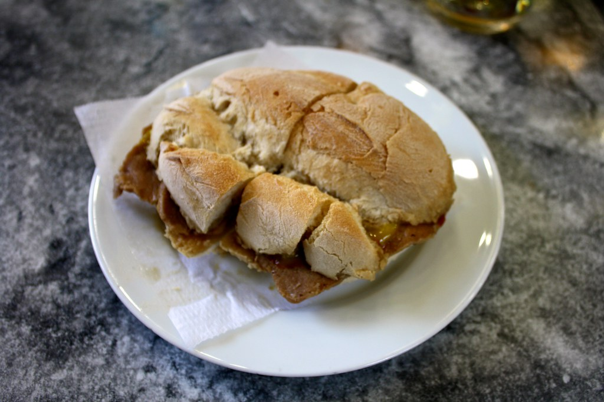

Bifana is a classic Portuguese sandwich featuring thinly sliced pork marinated and cooked in a garlicky,
slightly spicy sauce. It's served in a crusty bread roll, making it a quick, flavorful street food favorite.

Ingredients
300g thinly sliced pork loin or shoulder
2 cloves garlic, minced
1 tablespoon white wine
1 tablespoon olive oil
1 teaspoon paprika
1 teaspoon yellow mustard
1 bay leaf
1 teaspoon piri-piri sauce or hot sauce (optional)
Salt and black pepper, to taste
2-3 Portuguese bread rolls or crusty buns
Steps
In a bowl, marinate pork with garlic, white wine, paprika, mustard, bay leaf, hot sauce, salt, and
pepper
for at least 30 minutes.
Heat olive oil in a skillet over medium heat. Add the marinated pork (remove bay leaf) and cook until
browned and cooked through, about 5–7 minutes.
Slice bread rolls and warm them lightly. Pile hot pork onto the rolls, spoon extra sauce over if you
like.
Serve the bifanas hot, optionally with mustard or piri-piri sauce on top. Enjoy!